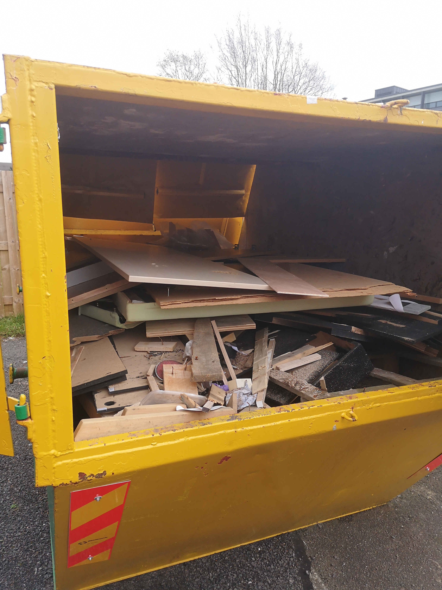
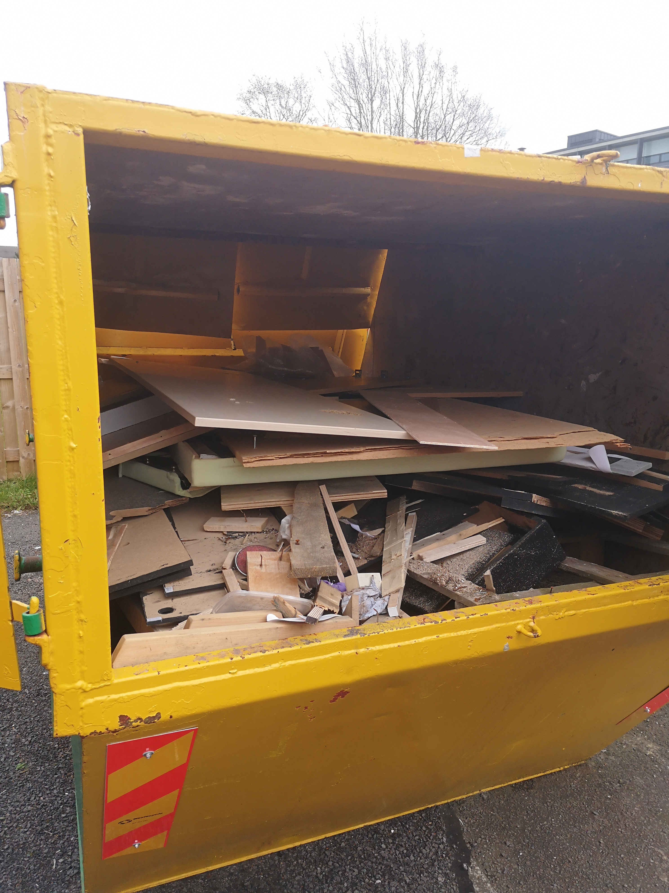

Approach
SmartSource was a solo project which followed the 4 D's design process. I conducted the research and defined all the contextual issues. I then conducted interviews, card sorting and bodystorming sessions with participants from SME's (small, medium enterprises). Participants were also asked to create photo diaries of their business waste material over a month. This produced a wealth of rich qualitative data.
 

Collected data was compiled and synthesized into key usability problems. This information was supported by creating customer journey maps, storyboards and mapping out user journeys.


Goals
As someone with experience in industry and a passion for projects that help to support a green future, the main goal of the project, was to reduce the impact of manufacturing companies on national waste production.
Outcome
Companies involved in the process were incredibly happy with the final outcome and the prospects that the platform could offer them. Environmental, economic and social benefits were found to have been made clear through the branding and app onboarding, flow and features.
View the live prototype here